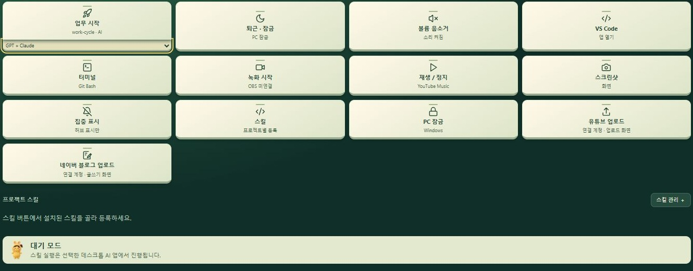
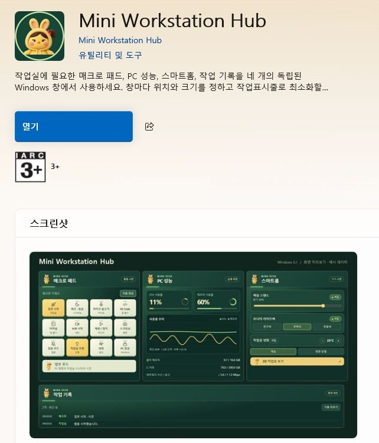

프로젝트별 스킬
로컬 폴더나 GitHub 저장소를 프로젝트로 등록하고, 선택한 GPT 또는 Claude 데스크톱 앱에 스킬 요청을 전달합니다.
WINDOWS DESKTOP · 0.8.0.0
자주 쓰는 작업은 매크로 키로 시작하고, 개발 도구와 PC 상태는 필요한 창만 펼쳐 확인하는 Windows 데스크톱 앱입니다.

Windows 미니PC에서 버튼을 직접 누르고 성능 창을 조작하는 과정을 녹화했습니다.
C# Windows Forms에서 창을 관리하고, WebView2로 매크로 키와 성능 그래프를 표시합니다.
매크로 키를 누르거나 개발자 컨트롤, PC 성능 등 필요한 창을 엽니다.
C#에서 입력과 PC 설정을 읽어 앱을 열고, 성능 창에 필요한 값을 측정합니다.
버튼 상태와 성능 그래프가 갱신되고, 작업 기록에서 실행 결과를 확인합니다.
로컬 폴더나 GitHub 저장소를 프로젝트로 등록하고, 선택한 GPT 또는 Claude 데스크톱 앱에 스킬 요청을 전달합니다.
프로젝트의 개발 도구와 GitHub 작업 화면에 접근하고, 필요한 패널을 꺼내 창 배치를 조절합니다.
연결된 Home Assistant 기기를 보거나, 별도 위젯에서 시계와 달력을 확인합니다.
Microsoft Store 제품 상세 페이지에서 앱 소개와 등록된 스크린샷을 확인할 수 있습니다.
